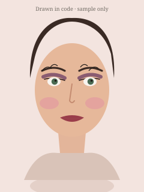
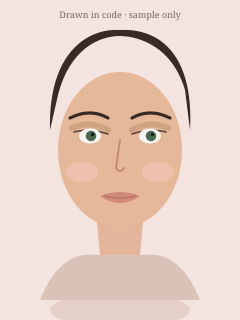
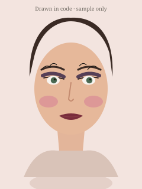

Sample only · 9:16 layout · drawn in code
Full Guide · suggestions from your photo
Your makeup guide
These are suggestions from this photo only. Lighting, the camera and how you apply makeup will change the result. This is not medical, skin or dermatology advice.
Your photo
This saved guide shows your notes and illustrated looks only. The photo isn't kept with the guide.
Your profile
From this photo, the guide treats your face shape as oval. Eye colour, as it appears here, looks green-brown. Brows look softly arched. Lips look medium, slightly fuller in the lower lip.
Brows look full in this photo.
A leans warm undertone looks likely in this photo. Lighting in a single photo can throw undertone off, so treat this as a starting point.
Suggested colour palette
Colour suggestions
These are starting points from this photo, not an exact match and not a product list. Try them in the light you'll actually wear the makeup in.
| Base | a medium neutral base, then adjust warmer or cooler in the light you'll wear it in |
| Cheeks | a soft mid-tone blush in a cream or powder form |
| Lips | a mid-tone satin lip |
| Eyes | soft neutrals, plus one slightly deeper shade for definition |
| Liner | a brown or deep grey pencil |
| Lashes | a defining brown or black mascara, as you prefer |
Shade names are colour families, not a guaranteed match to a shop shade. Bases in particular shift with light and with the rest of the makeup.
Makeup suggestions
Eyes
You might try soft neutrals, plus one slightly deeper shade for definition on the lid, with a slightly deeper shade in the crease if you want more definition. A brown or deep grey pencil can stay close to the lash line. Mascara is optional; a defining brown or black mascara, as you prefer, is a simple default.
Cheeks
A soft blush, placed where the cheek naturally rounds when you smile, is enough for most days. A soft mid-tone blush in a cream or powder form is a starting point. Stop before it looks heavy in daylight.
Lips
A mid-tone satin lip should sit close to the natural lip edge, rather than well outside it. A satin or sheer finish is easier to wear in the daytime; a deeper or more matte finish can wait for the evening if you want it.
Base
If you use a base, a medium neutral base, then adjust warmer or cooler in the light you'll wear it in, is the starting range from this photo. A light, even finish is the aim: enough to even out the look of this photo, not a mask. You can skip base and use only a light cheek and lip if you prefer.
Look ideas
The Makeup Guide includes two illustrated looks matched to your colour notes: Soft glam and Everyday fresh. The Full Guide adds one extra look, Evening satin. That's three illustrated looks matched to your colour notes in total. They are suggestions for how makeup might sit, not a promise of a result.
Illustrated look: Soft glam

Illustration of a makeup look, drawn from your colour notes. It isn't a photo of you or a promise of results. Real makeup, skin and lighting will look different.A slightly dressed-up take on the same palette.
Illustrated look: Everyday fresh

Illustration of a makeup look, drawn from your colour notes. It isn't a photo of you or a promise of results. Real makeup, skin and lighting will look different.A lighter everyday take, with a sheer lip and a soft cheek.
Illustrated look: Evening satin

Illustration of a makeup look, drawn from your colour notes. It isn't a photo of you or a promise of results. Real makeup, skin and lighting will look different.Another way to use the same palette, with a deeper satin lip.
Quick tips
- Check the makeup in daylight, not only in the mirror light you applied it in.
- You can stop at a good cheek and lip; you don't need every step every day.
- If a colour looks strong in the pan, start with a little and add more.
- Keep a clean edge around the lip; tidy with a cotton bud rather than drawing further out.
- Take a second photo in a different light if you want another read. One photo is only one read.
Sample text for this demo. In the live app, the guide is written by AI from one photo. It is general beauty and styling advice only, not medical, skin or dermatology advice, and not a promise of a result.
Sample text. In the live app: analysis and notes written by AI (Grok, from xAI) from one photo. The look pictures are illustrations drawn by Glam AI, not photos of you.